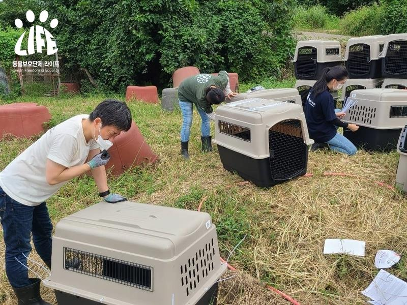

[Activity Report] Detection and rescue of Jin Mat Dog Edible Dog Farm in Jindo County, Chunnam
Registration Date Author Life Attachment activitydata_06_01 {kind=link}
(a) Homogeneity protection group Life
Animal Protection Organizations
Humane Society International Korea
(Humane Society International/Korea)
(hereinafter HSI)
Operated for edible purposes for the past 20 years
We caught a catamaran edible dog farm.
The farm is home to 60 farmers.
For edible purposes for the past 20 years or so
By purchasing dogs of the Jindo Mix breed and
He was slaughtered while breeding,
The slaughtered dog is the farmer himself.
Jindo County, which was operated by itself, in the high-face material
From the Bosintang House to the Bosintang
It turns out that it has been sold.
When the screams of the dogs on the farm ceased,
By reports of unbearable neighbors
In early July, he was caught by police as a current offender.
Currently accused of violating the Animal Protection Act
Investigation by the Prosecutor (Mokpo Bureau)
I was receiving.
The Jindo Army has a national budget
The Jin Dogs under the management of the Ministry of Cultural Heritage and the Jindo Army
A total of 10,000.
Of these, 4 thousand are
It has been designated as Natural Monument No. 53,
The remaining 6,000 are natural monuments
It is protected by a reserve resource.
In this group of progress, the dogs of the Jindo species
Not only were they raised and slaughtered for edible purposes.
The fact that it even includes a natural monument candidate dog
I was horrified.
In addition, the Jindo Army is a case where the farmer in question is
In front of the sight of a homogeneous animal
Through the act of killing animals
Violation of the Animal Protection Act (School of Zoology) as a current offender
He was aware of his presence in the police,
Accordingly, from animal abusers
Despite the need to isolate the animal,
Lack of animal protection space and
Animal cruelty can be diagnosed
For reasons such as the absence of a veterinarian
Not a single dog is placed in emergency quarantine
We weren't there.
On the ongoing protests of Life and HSI
The Jindo Army was about a month after the incident occurred.
I accompanied the farm to the veterinarian,
About the catamarans left behind in the dog farm where the slaughter has stopped
Signs of physical and emotional abuse with the naked eye
We concluded that it was impossible to find.
Life and HSI with Dog Farmers
Through individual negotiations
Ownership of the remaining dogs was transferred,
Only then will the rescue of the animals be carried out.
We were able to proceed.
On the day of the rescue, the groups
Contrary to the words of the planters,
Under the management of the Ministry of Cultural Properties and the Jindo Army
Tentacles have also been found.
The catamarans that are managed through the state's budget
All have built-in recognition chips planted in them.
Organizations use scanners (readers)
The unique number of the corresponding objects has been checked,
We plan to go through a legal review and make additional accusations, etc.
On one side, it boasts that it is a natural monument of the country,
On the other side, you can put it on the table and enjoy it.
It was a scene of anger beyond horror.
Human duality, of course,
There are also problems with the system and the national level.
It's a scene to show.
A catamaran designated as a natural monument and
The difference between a catamaran sacrificed for food
We don't know.
Whether the catamaran is a natural monument or not,
Everyone has communication with people
It should be borne in mind that it is an almost perfect pet.
In one of the slaughterhouses of the dog farm,
When dogs that have been brutally slaughtered are alive
The leash I was doing was stacked in a heap.
This means that the dogs that were slaughtered at the dog farm
Not that they have been breeding, but
Was being raised by someone
It's proof that they're dogs.
The fact that there is a separate dog and an edible dog
It is also a disproof that it is not.
The ban on eating in our generation is
It must be finished.
All the dogs rescued today
Moving to a foster shelter prepared by animal protection groups East Sea
It will be managed and protected.
If there is no domestic adoption thereafter,
Go to the United States and Canada, etc.
We will be proceeding with the adoption.
In addition, through continuous communication with the Jindo County Council,
For edible purposes
strongly regulates the practice of raising dogs,
Isolate abused and organic animals;
Improving the Safeguarding Scheme
Let me urge you.